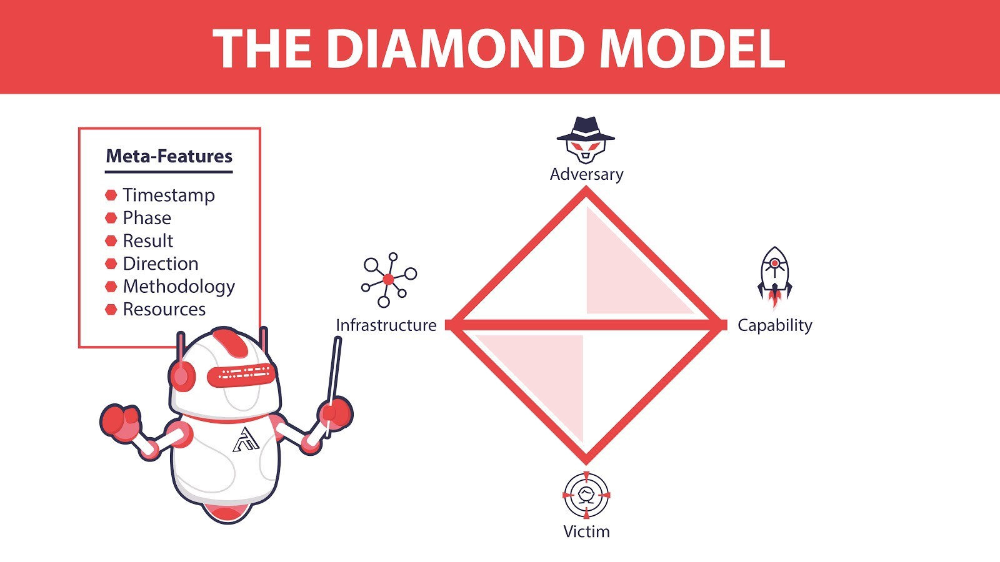
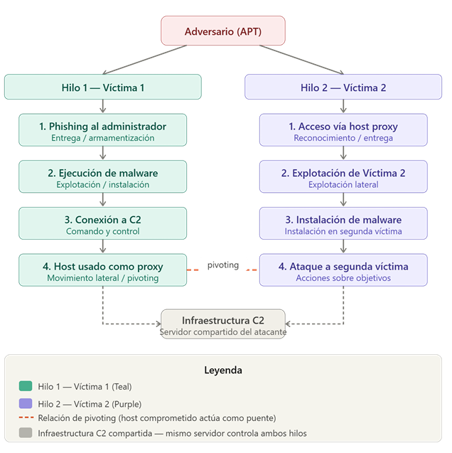

Análisis de Intrusiones con el Modelo de Diamante
La ciberseguridad moderna enfrenta un panorama de amenazas en constante evolución, donde los ataques dirigidos ya no pueden analizarse como eventos aislados[cite: 175]. La sofisticación de los grupos de amenazas persistentes avanzadas (APT) exige marcos analíticos que permitan correlacionar evidencia técnica, comprender la intención del adversario y anticipar patrones de comportamiento futuros[cite: 176]. En este contexto, el Modelo Diamante de Análisis de Intrusiones emerge como una herramienta fundamental para los equipos de respuesta a incidentes y los analistas de inteligencia de amenazas[cite: 177].
Propuesto por Caltagirone, Pendergast y Betz en 2013, el Modelo Diamante ofrece una estructura conceptual que descompone cualquier evento de intrusión en cuatro elementos interrelacionados: el adversario, la capacidad técnica empleada, la infraestructura utilizada y la víctima objetivo[cite: 178]. Esta representación no sólo facilita el análisis forense de un incidente individual, sino que también permite construir hilos de actividad que revelan campañas coordinadas, pivoting entre víctimas y el modus operandi del atacante a lo largo del tiempo[cite: 179].
Contexto del material
Este conjunto de ejercicios está diseñado para reforzar conceptos fundamentales como:
- El axioma central del Modelo Diamante y cómo traslada el análisis desde la simple detección de indicadores de compromiso (IoC) hacia la comprensión profunda del comportamiento del atacante[cite: 184, 188].
- La caracterización técnica de los cuatro vértices del diamante: Adversario, Capacidad, Infraestructura y Víctima[cite: 194].
- La integración metodológica con la Cyber Kill Chain de Lockheed Martin y el framework de matrices conceptuales de MITRE ATT&CK[cite: 220, 225].
- El análisis procedimental de técnicas de evasión perimetral complejas como el Pivoting y el Movimiento Lateral en campañas coordinadas de grupos APT[cite: 228, 229, 231].
1. Elementos del Modelo Diamante
A continuación se presenta la matriz conceptual detallada con las descripciones y ejemplos prácticos de cada uno de los cuatro vértices clave del modelo[cite: 241, 242]:
| Vértice / Elemento | Descripción Conceptual | Ejemplo Práctico Analizado |
|---|---|---|
| Adversario | Actor malicioso que lleva a cabo el ataque (puede ser un individuo o un grupo APT estructurado)[cite: 242]. | Grupo APT28 (Fancy Bear), atacante con patrocinio o perfil de estado-nación[cite: 242]. |
| Capacidad | Herramientas, técnicas y procedimientos (TTPs) y el arsenal técnico completo desplegado por el atacante[cite: 242]. | Malware de tipo troyano de acceso remoto (RAT) o exploit de vulnerabilidad zero-day en Microsoft Office[cite: 242]. |
| Infraestructura | Recursos físicos o lógicos utilizados de forma directa o indirecta para sostener y ejecutar el ataque[cite: 242]. | Dominio malicioso (e.g., update-srv.net) o un servidor VPS localizado externamente[cite: 242]. |
| Víctima | La entidad u organización objetivo del ataque; abarca tanto al personal (target) como a los sistemas/activos (assets)[cite: 204, 242]. | Empresa u organización de infraestructura crítica; hosts o estaciones de trabajo Windows de empleados[cite: 242]. |

2. Desglose Forense y Metacaracterísticas del Evento
El enriquecimiento analítico del incidente se detalla mediante las metacaracterísticas que estructuran el registro del evento en la red interna de la organización[cite: 243, 244]:
- Marca del tiempo (Timestamp): Momento preciso en que los registros de auditoría (logs) detectan e identifican conexiones salientes persistentes hacia direcciones IP externas controladas por el C2[cite: 244].
- Fase de la Cadena de Ataque: Ubicación dentro de la fase 6 (Comando y Control) de la Cyber Kill Chain; el código malicioso ya fue depositado e instalado para establecer comunicación directa de control continuo con el atacante[cite: 244].
- Resultado Técnico: Múltiples hosts comprometidos dentro de la red corporativa, canal C2 plenamente activo, con indicios claros de exfiltración de información y movimiento lateral en progreso[cite: 244].
- Dirección del Flujo: Flujo interactivo estructurado como: Adversario → Infraestructura (Servidor C2) → Víctima (Entorno de red interna comprometido)[cite: 244].
- Metodología de Intrusión: Despliegue de malware con cadenas de dominio C2 embebidas; peticiones de resolución DNS anómalas hacia el exterior; técnicas avanzadas de pivoting desde hosts previamente infectados hacia nuevos objetivos[cite: 244].
- Recursos Operativos Utilizados: Dominios maliciosos de C2, IPs externas asignadas a servidores virtuales privados (VPS), registros WHOIS, logs perimetrales de tráfico de red y herramientas de auditoría DNS[cite: 244].
3. Relación de Eventos y Alineación con la Cyber Kill Chain
Para mapear temporalmente la intrusión y determinar las ventanas de mitigación oportunas, se correlacionan los hitos técnicos observados con las fases secuenciales de la Cyber Kill Chain corporativa[cite: 220, 222, 257, 258]:
| Evento Técnico Detectado | Fase Correspondiente de la Cyber Kill Chain |
|---|---|
| Envío y recepción del vector de Phishing | Fase 2: Armamentización / Fase 3: Entrega. Uso de correo malicioso como el punto de entrada inicial[cite: 258]. |
| Detección del archivo ejecutable de malware | Fase 5: Instalación. El código malicioso ha sido exitosamente depositado y ejecutado en el host víctima[cite: 258]. |
| Conexión persistente hacia el exterior | Fase 6: Comando y Control (C2). Establecimiento exitoso del canal interactivo de comunicación remota[cite: 258]. |
| Ejecución operativa remota del malware | Fase 6: Comando y Control (C2). Control de sesión remota por el atacante que da pie a las acciones sobre objetivos[cite: 258]. |
4. Grafos de Actividad e Hilos de Campaña (Pivoting)
A través de la correlación cruzada de eventos dispersos en la infraestructura, se reconstruyó el grafo de actividad que evidencia la ejecución del pivoting a nivel de red[cite: 211, 233, 264, 293]:
Descripción analítica del flujo: En el Hilo 1, el adversario compromete una cuenta administrativa vía phishing; el malware establece la baliza hacia el C2 y convierte este host en un puente o "proxy proxy" interno[cite: 294]. Esto da paso al Hilo 2, donde el atacante utiliza esa confianza implícita del tráfico interno para evadir la inspección perimetral del firewall, saltar hacia una segunda zona de la red (Víctima 2), explotar vulnerabilidades locales y perpetrar la exfiltración de activos confidenciales[cite: 295, 296, 309].

Conclusión y reflexión técnica
Desde una perspectiva técnica, el análisis del escenario presentado demuestra con claridad la utilidad operacional del Modelo Diamante como marco de inteligencia de amenazas[cite: 304]. La detección inicial del malware no constituye el fin del proceso analítico, sino su punto de partida[cite: 305]. Al descomponer el incidente en sus cuatro vértices (adversario, capacidad, infraestructura y víctima) y enriquecerlo con las seis metacaracterísticas, el analista obtiene una representación estructurada que trasciende el indicador de compromiso individual y revela la arquitectura completa de la campaña maliciosa[cite: 306].
El concepto de pivoting, central en la construcción del segundo hilo de actividad, ilustra una limitación crítica de las defensas perimetrales convencionales: una vez que el adversario opera desde el interior de la red, la confianza implícita en el tráfico interno se convierte en un vector de propagación destructivo[cite: 309]. Este hallazgo refuerza la necesidad urgente de migrar hacia arquitecturas de seguridad robustas basadas en el principio de mínimo privilegio y confianza cero (Zero Trust), en las cuales ningún segmento de red es considerado inherentemente seguro[cite: 310]. El Modelo Diamante transforma la evidencia forense en inteligencia accionable, permitiendo anticipar los próximos movimientos del adversario antes de que estos se materialicen[cite: 312, 313].